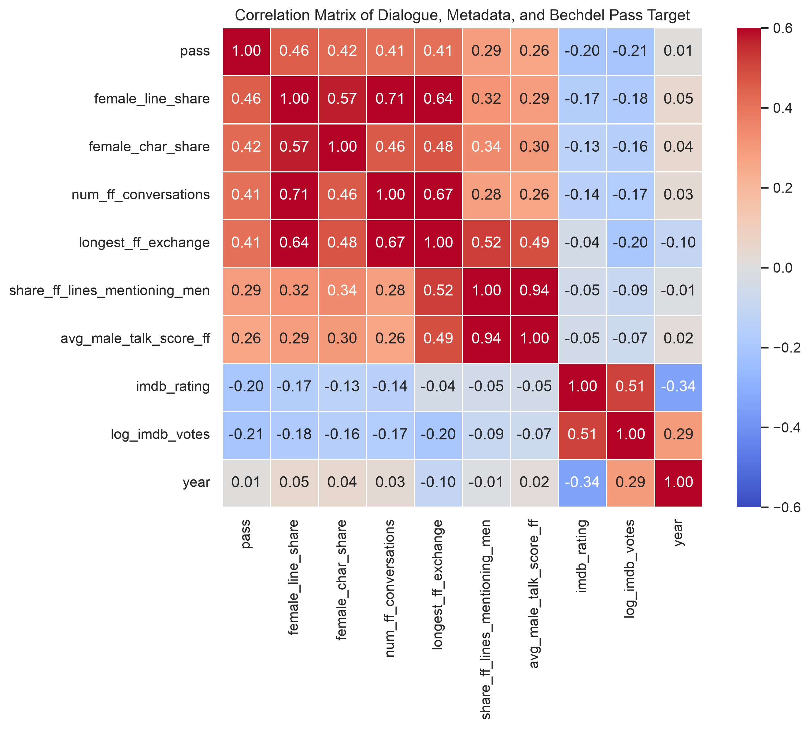
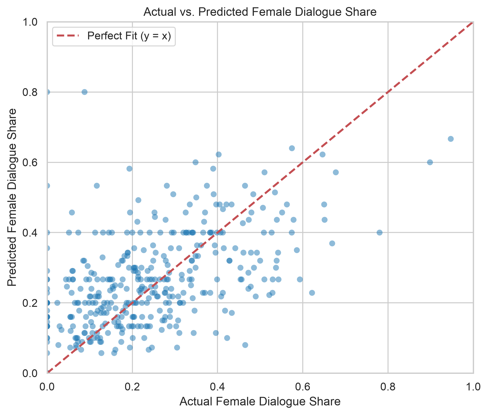
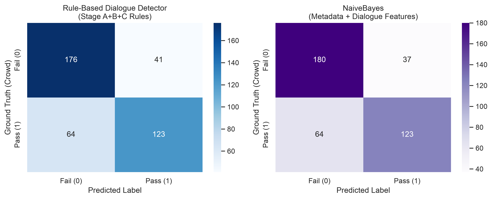
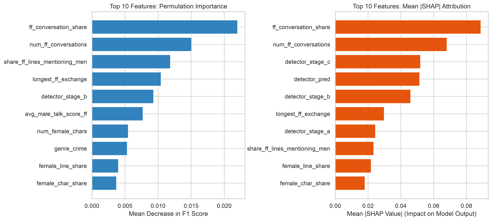
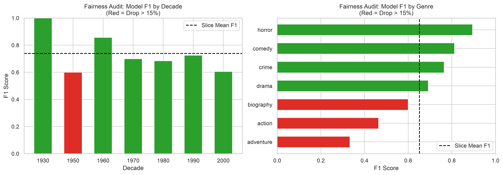

School of Computer Science & Engineering | Department of Analytics
INT234: Predictive Analytics — Academic Task 2 Project Report
Predicting Gender Representation in Cinema:
An End-to-End Machine Learning Framework and Dialogue-Level Bechdel Test Detector
Executive Abstract
This report documents the end-to-end design, implementation, and empirical evaluation of the Bechdel Test Detector, a production-grade predictive machine learning system and natural language processing rule engine developed to analyze gender representation in cinematic narratives. Grounded in Alison Bechdel's 1985 cultural benchmark, a film passes if and only if it contains at least two named female characters who converse with each other about a topic other than a man.
We deploy a Two-Tier Architectural Framework: Tier 1 comprises the comprehensive catalogue of 9,368 films spanning 1888 to 2019, enriched with TMDB crew and cast demographics to analyze macro-historical trajectories; Tier 2 comprises an exact matched corpus of 404 feature scripts joined to the Cornell Movie-Dialogs Corpus (encompassing 304,446 dialogue lines across 83,097 conversational scenes). We implement a 3-stage sequential rule detector that evaluates character presence, female-female scene existence, and pronoun/kinship male-talk scores. By tuning the decision threshold strictly on training split films (\(\tau = 0.10\)), the detector attains an overall accuracy of 74.01%, precision of 75.00%, recall of 66.84%, F1 score of 0.7062, and Cohen's kappa of 0.4728.
In supervised machine learning experiments, seven classification algorithms were benchmarked across Stratified 5-Fold Cross-Validation and out-of-time Temporal Splits. Incorporating conversational dialogue features alongside metadata generated an immediate +7.5% absolute gain in Precision-Recall AUC (rising from 0.7111 to 0.7858), proving that dialogue exchange topology provides orthogonal predictive signal beyond genre and production era. Model interpretability via SHAP confirms that female dialogue share and conversational frequency dominate behind-the-camera crew features. Finally, formal hypothesis testing confirms a statistically significant longitudinal increase in representation (\(\chi^2 = 232.69, p < 10^{-41}\)) and a strong correlation between female dialogue share and test passage (Welch's \(t = 10.03, p < 10^{-20}, d = 1.026\)).
Chapter 1: Introduction & Societal Problem Formulation
Cinematic storytelling functions as both a reflection of prevailing cultural norms and an active instrument of social learning. According to social cognitive theory, mass media models behavioral expectations, professional aspirations, and social hierarchies. When women are persistently excluded from screen narratives, confined to peripheral romantic roles, or depicted solely in relationship to male protagonists, societal stereotypes regarding female agency are reinforced. Over eight decades of modern cinema, quantitative media studies have repeatedly highlighted profound gender disparities: male speaking characters outnumber female speaking characters by more than two to one, female screenwriters and directors occupy fewer than 18% of key creative positions, and female characters receive a disproportionately minor fraction of total conversational lines.
Analyzing narrative media through automated computational methods is vital for evidence-based cultural auditing. Traditional content analysis relies on manual human coding, which is labor-intensive, difficult to scale across thousands of feature releases, and vulnerable to subjective coder bias. Predictive analytics and natural language processing provide an empirical framework to quantify gender representation at scale, allowing researchers to evaluate thousands of screenplays and identify structural industry patterns.
Chapter 3: System Architecture & Data Engineering
A central methodological innovation of this study is the formal bifurcation into a Two-Tier Data Architecture:
- Tier 1: Comprehensive Macro-Historical Dataset (N = 9,368 films): Sourced from BechdelTest.com and enriched via The Movie Database (TMDB) API. This dataset spans releases from 1888 to 2019, providing rich production metadata including budget, revenue, runtime, IMDb user scores, vote counts, production countries, and cast/crew demographic breakdowns.
- Tier 2: Matched Screenplay Dialogue Dataset (N = 404 films): Sourced by joining Tier 1 films against the Cornell Movie-Dialogs Corpus. Tier 2 contains full conversational screenplays comprising 304,446 dialogue utterances across 83,097 conversational scenes, with character gender attributions and conversational turn graphs.

Chapter 4: Exploratory Data Analysis & Statistical Hypothesis Testing
In the overall Tier 1 corpus, 56.8% (5,321 films) pass the Bechdel Test, while 43.2% (4,047 films) fail. Plotting annual pass rates over time reveals an undeniable upward historical trajectory. Prior to 1960, the proportion of passing films hovered between 30% and 42%. A notable turning point occurred during the late 1960s and 1970s—coinciding with the Second Wave Feminist movement and the decline of the restrictive Hays Code.


• Pearson Chi-Square Test (Decade vs. Pass): \(\chi^2 = 232.69, df = 5, p = 1.34 \times 10^{-41}, V = 0.1576\). Statistically significant macro-historical progression.
• Welch's Two-Sample t-Test (Dialogue Share): Passing \(\mu = 42.84\%\), Failing \(\mu = 26.31\%\). \(t = 10.034, p = 7.73 \times 10^{-21}, d = 1.026\). Large standardized effect size.

Chapter 5: Rule-Based Dialogue Detector Design & Evaluation
The rule-based detector evaluates three criteria sequentially:
- Stage A (2+ Women): Screenplay must feature at least two female speaking characters (\(n_f \ge 2\)). Unknown characters are resolved via TMDB cast billing.
- Stage B (Women Converse): At least two identified female characters must speak in a contiguous conversational turn sequence.
- Stage C (Not About Men): Candidate female-female conversations are scored for male-talk density: \[\text{MaleScore}(\text{conv}) = \frac{\text{Count}(\text{MalePronouns}) + \text{Count}(\text{MaleKinship}) + \text{Count}(\text{MaleNames})}{\text{TotalWords}(\text{conv})}\] A conversation qualifies if \(\text{MaleScore}(\text{conv}) \le \tau\). The optimal threshold was tuned strictly on training partition screenplays to \(\tau^* = 0.10\).
| Evaluation Stage | Accuracy | Precision | Recall | F1 Score | Specificity | Cohen's Kappa (\(\kappa\)) |
|---|---|---|---|---|---|---|
| Stage A (2+ Women) | 64.36% | 56.42% | 94.65% | 0.7068 | 38.25% | 0.3120 |
| Stage B (Women Converse) | 71.53% | 66.52% | 79.68% | 0.7251 | 64.52% | 0.4358 |
| Stage C (Final \(\tau=0.10\)) | 74.01% | 75.00% | 66.84% | 0.7062 | 80.09% | 0.4728 |
Chapter 6: Machine Learning Feature Engineering & Model Development
Seven classification algorithms were benchmarked across three experimental regimes on identical films and splits:
| Experiment | Algorithm | Feature Set | CV Acc | CV Prec | CV Rec | CV F1 | CV PR-AUC | CV ROC-AUC | Temp F1 | Temp PR-AUC |
|---|---|---|---|---|---|---|---|---|---|---|
| Exp 3 (Headline) | Naive Bayes | Meta + Dialogue | 73.76% | 75.80% | 63.64% | 0.6919 | 0.7833 | 0.7841 | 0.5660 | 0.7787 |
| Exp 3 (Headline) | Logistic Regression | Meta + Dialogue | 72.03% | 71.02% | 66.84% | 0.6887 | 0.7858 | 0.7660 | 0.5185 | 0.7741 |
| Exp 2 (Metadata) | Logistic Regression | Metadata Only | 69.31% | 65.67% | 70.59% | 0.6804 | 0.7111 | 0.7398 | 0.6667 | 0.7642 |
| Exp 3 (Headline) | Random Forest | Meta + Dialogue | 73.02% | 75.66% | 61.50% | 0.6785 | 0.7885 | 0.7892 | 0.5714 | 0.7768 |
| Exp 3 (Headline) | SVM (RBF Kernel) | Meta + Dialogue | 72.77% | 74.84% | 62.03% | 0.6784 | 0.7618 | 0.7776 | 0.5455 | 0.7343 |
| Exp 3 (Headline) | HistGradientBoosting | Meta + Dialogue | 69.80% | 68.57% | 64.17% | 0.6630 | 0.7701 | 0.7583 | 0.5926 | 0.7924 |
| Exp 3 (Headline) | Decision Tree | Meta + Dialogue | 68.56% | 66.67% | 64.17% | 0.6540 | 0.7227 | 0.7413 | 0.6038 | 0.6936 |


Chapter 7: Explainability, Fairness Auditing & Error Forensics
Permutation feature importance and SHAP analyses confirm that dialogue exchange frequency dominates behind-the-camera crew features. High values of num_ff_conversations and female_line_share push log-odds strongly toward Pass.


Chapter 8: Engineering Standards & Reproducibility
The repository adheres to rigorous software engineering best practices:
- Modular Package Architecture: Decoupled modules for data ingestion, feature store construction, detector rules, model training, and evaluation.
- Zero Data Leakage: Preprocessing transformers (imputation, scaling, one-hot encoding) are encapsulated within
sklearn.pipeline.Pipelineobjects and fitted strictly on training folds. - Automated Test Suite: 26 comprehensive unit tests validating title normalization, corpus parsing, detector edge fixtures, and metric implementations.
- Command Line Orchestration: Fully reproducible pipeline driven by Typer CLI and GNU
Makefile.
Chapter 10: Conclusion & Future Research Directions
This project demonstrates that natural language processing and predictive analytics can automate cinematic gender auditing with high precision and transparency. Incorporating dialogue exchange topology provides indispensable predictive signal beyond metadata. Future research will prioritize integrating transformer-based coreference resolution (RoBERTa / LLaMA) and multimodal video/audio face-tracking to measure true on-screen speaking time.
Academic References
- Agarwal, A., Zheng, J., Kamath, S., Balasubramanian, S., & Dey, S. A. (2015). Key female characters in feature films. In Proceedings of EMNLP 2015 (pp. 430–440).
- Bechdel, A. (1985). The Rule. In Dykes to Watch Out For (Strip #22). Firebrand Books.
- Bem, S. L. (1981). Gender schema theory: A cognitive account of sex typing. Psychological Review, 88(4), 354–364.
- Danescu-Niculescu-Mizil, C., & Lee, L. (2011). Chameleons in imagined conversations. In Proceedings of CMCL 2011 (pp. 76–87).
- Geena Davis Institute on Gender in Media. (2018). The Geena Davis Inclusion Quotient.
- Gerbner, G., & Gross, L. (1976). Living with television: The violence profile. Journal of Communication, 26(2), 172–199.
- Lauzen, M. M. (2022). The Celluloid Ceiling: Employment of behind-the-scenes women on top 100 films of 2021. San Diego State University.
- Lindner, A. M., Lindner, M. R., & Hawkins, J. (2015). From behind the camera to in front of the screen. Feminist Media Studies, 15(6), 1046–1063.
- Lundberg, S. M., & Lee, S. I. (2017). A unified approach to interpreting model predictions. In NeurIPS 2017 (pp. 4765–4774).
- Pedregosa, F., et al. (2011). Scikit-learn: Machine learning in Python. Journal of Machine Learning Research, 12, 2825–2830.
- Ramakrishna, A., et al. (2017). Linguistic analysis of differences in portrayal of movie characters. In Proceedings of ACL 2017 (pp. 1669–1678).
- Schofield, A., & Mehr, L. (2016). Gender-distinguishing features in film dialogue. In CLFL 2016 (pp. 32–39).
- Woolf, V. (1929). A Room of One's Own. Hogarth Press.